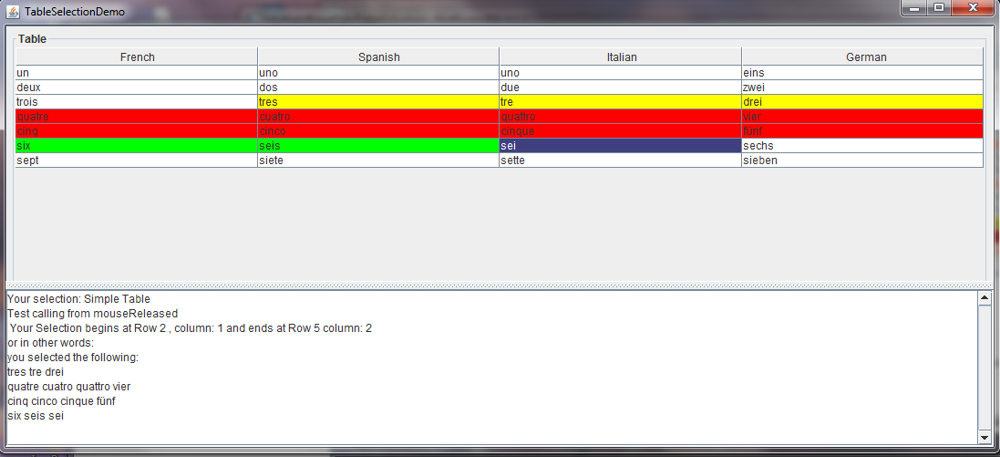

Introduction to MultipleRowsSelection
In the past, i was seeking a way to do a multiple select on java JTables, with rows, cells and columns in a JTable, or select parts of them. I couldn’t find any code in the web to do so. I found some examples to do a column select, or multiple row select. But there was nothing to do a selection with parts of rows, like making text selections in a word processing program. So i had to do it myself. SAnd for now i reached the light at the end of the way to can do so. If you have to use JTables with an option to do a selection with parts of rows, than i invite you to relax and make use of the code you will find at this place. I think there is clearly a need for a new way to do selections with JTables, beside the existing methods. I have found many, more or less useful examples, in the web to do selections in JTables. But now enough the words, lets see what i mean:
Note
THE SOFTWARE IS PROVIDED “AS IS”, WITHOUT WARRANTY OF ANY KIND, EXPRESS OR IMPLIED, INCLUDING BUT NOT LIMITED TO THE WARRANTIES OF MERCHANTABILITY, FITNESS FOR A PARTICULAR PURPOSE AND NONINFRINGEMENT. IN NO EVENT SHALL THE AUTHORS OR COPYRIGHT HOLDERS BE LIABLE FOR ANY CLAIM, DAMAGES OR OTHER LIABILITY,WHETHER IN AN ACTION OF CONTRACT, TORT OR OTHERWISE, ARISING FROM, OUT OF OR IN CONNECTION WITH THE SOFTWAREOR THE USE OR OTHER DEALINGS IN THE SOFTWARE.